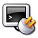
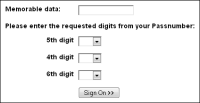

|

| Placeholders
KeePass supports various placeholders.
|
In many places in KeePass (auto-type, URL field, triggers, ...),
placeholders can be used.
Placeholders are case-insensitive.
KeePass uses the abbreviation "Spr" for "String placeholder replacement".
An Spr-compiled field is a field where placeholders are replaced
when performing an action with this field (like copying it to the
clipboard, sending it using auto-type, etc.).
 Entry Field Placeholders
Entry Field Placeholders
| Placeholder | Field |
|---|
{TITLE} | Title |
{USERNAME} | User name |
{URL} | URL |
{PASSWORD} | Password |
{NOTES} | Notes |
Custom strings can be referenced using {S:Name}.
For example, if you have a custom string named "eMail",
you can use the placeholder {S:eMail}.
| Placeholder | Is Replaced By |
|---|
{URL:RMVSCM} | Entry URL without scheme name. |
{URL:SCM} | Scheme name of the entry URL. |
{URL:HOST} | Host component of the entry URL. |
{URL:PORT} | Port number of the entry URL. |
{URL:PATH} | Path component of the entry URL. |
{URL:QUERY} | Query information of the entry URL. |
{URL:USERINFO} | User information of the entry URL. |
{URL:USERNAME} | User name of the entry URL. |
{URL:PASSWORD} | Password of the entry URL. |
An example can be found below.
Entry Field References
Fields of other entries can be inserted using
Field References.
Paths and Date/Time Placeholders
| Placeholder | Is Replaced By |
|---|
{INTERNETEXPLORER} | Path of Internet Explorer, if installed. |
{FIREFOX} | Path of Mozilla Firefox, if installed. |
{OPERA} | Path of Opera, if installed. |
{GOOGLECHROME} | Path of Google Chrome (or Chromium
on Unix-like systems), if installed. |
{SAFARI} | Path of Safari, if installed. |
Microsoft Edge.
There exists no placeholder for Edge, because Edge is an app
that cannot be started like a regular Windows application.
In order to open an URL using Edge, prefix the URL with 'microsoft-edge:'.
For example, in order to open the URL
http://keepass.info/
using Edge, use the URL
microsoft-edge:http://keepass.info/.
| Placeholder | Is Replaced By |
|---|
{APPDIR} | KeePass application directory path. |
| Placeholder | Is Replaced By |
|---|
{GROUP} | Name of the entry's parent group. |
{GROUP_PATH} | Full group path of the entry. |
{GROUP_NOTES} | Notes of the entry's parent group. |
{GROUP_SEL} | Name of the group that is currently selected in the main window. |
{GROUP_SEL_PATH} | Full path of the group that is currently selected in the main window. |
{GROUP_SEL_NOTES} | Notes of the group that is currently selected in the main window. |
{DB_PATH} | Full path of the current database. |
{DB_DIR} | Directory of the current database. |
{DB_NAME} | File name (including extension) of the current database. |
{DB_BASENAME} | File name (excluding extension) of the current database. |
{DB_EXT} | File name extension of the current database. |
{ENV_DIRSEP} | Directory separator ('\' on Windows, '/' on Unix). |
{ENV_PROGRAMFILES_X86} | This is
%ProgramFiles(x86)%, if it exists, otherwise %ProgramFiles%. |
| Placeholder | Is Replaced By |
|---|
{DT_SIMPLE} | Current local date/time as a simple,
sortable string. For example, for 2012-07-25 17:05:34 the value is 20120725170534. |
{DT_YEAR} | Year component of the current local date/time. |
{DT_MONTH} | Month component of the current local date/time. |
{DT_DAY} | Day component of the current local date/time. |
{DT_HOUR} | Hour component of the current local date/time. |
{DT_MINUTE} | Minute component of the current local date/time. |
{DT_SECOND} | Seconds component of the current local date/time. |
{DT_UTC_SIMPLE} | Current UTC date/time as a simple, sortable string. |
{DT_UTC_YEAR} | Year component of the current UTC date/time. |
{DT_UTC_MONTH} | Month component of the current UTC date/time. |
{DT_UTC_DAY} | Day component of the current UTC date/time. |
{DT_UTC_HOUR} | Hour component of the current UTC date/time. |
{DT_UTC_MINUTE} | Minute component of the current UTC date/time. |
{DT_UTC_SECOND} | Seconds component of the current UTC date/time. |
 Environment Variables
Environment Variables
System environment variables are supported.
The name of the variable must be enclosed in '%' characters.
For example %TEMP% is replaced by the user's temporary path.
 Text Transformations
Text Transformations
| Placeholder | Action |
|---|
{T-REPLACE-RX:/Text/Search/Replace/} |
Searches the regular expression Search in Text
and replaces all matches by Replace.
See below. |
{T-CONV:/Text/Type/} |
Convert Text to Type.
See below. |
{T-REPLACE-RX:/Text/Search/Replace/} – Replace
Using Regular Expression:
This placeholder
searches the regular expression Search in Text
and replaces all matches by Replace.
All parameters are Spr-compiled, i.e. placeholders can be used within them.
The first character after the first ':' specifies the
separator character. Any character except '}' can be used as separator
character.
It must not appear within the parameters.
For example,
{T-REPLACE-RX:/A/B/C/} and
{T-REPLACE-RX:!A!B!C!} are equivalent.
The last separator character (before the '}') is required.
Usage example.
Let the user name field contain the e-mail address 'myname@myprovider.net' and
the URL field '{T-REPLACE-RX:!{USERNAME}!.*@(.*)!http://$1!}'.
When running the URL field, KeePass opens
'http://myprovider.net'.
{T-CONV:/Text/Type/} – Convert:
This placeholder converts Text to Type.
All parameters are Spr-compiled, i.e. placeholders can be used within them.
Supported types are:
- Upper or U:
Upper-case.
- Lower or L:
Lower-case.
- Base64:
The Base64 encoding of the UTF-8 representation of the text.
- Hex:
The Hex encoding of the UTF-8 representation of the text.
- Uri:
The URI-escaped representation of the text.
- Uri-Dec:
The URI-unescaped representation of the text.
Usage example.
Let the user name field contain 'Bob' and
the URL field 'http://myprovider.net/?user={T-CONV:/{USERNAME}/L/}'.
When running the URL field, KeePass opens
'http://myprovider.net/?user=bob'.
Other Placeholders
| Placeholder | Action |
|---|
{PICKCHARS}
{PICKCHARS:Fld:Opt} | Shows a dialog to pick certain characters from an entry string.
See below. |
{NEWPASSWORD}
{NEWPASSWORD:/Profile/} | Generates a new password.
See below. |
{PASSWORD_ENC} | Password in encrypted form.
See below. |
{HMACOTP} | Generates a one-time password.
See below. |
{C:Comment} | Comment; is removed. |
{BASE}
{BASE:RMVSCM}
{BASE:SCM}
{BASE:HOST}
{BASE:PORT}
{BASE:PATH}
{BASE:QUERY}
{BASE:USERINFO}
{BASE:USERNAME}
{BASE:PASSWORD} | Within an URL override,
each of these placeholders is replaced by the specified part of the string that is
being overridden.
See below. |
{PICKCHARS} – Picking Characters:
 The
The {PICKCHARS} placeholder shows a dialog, in which you can
pick characters of an entry string (like the password) at certain positions.
{PICKCHARS} without any parameters lets you pick an arbitrary
amount of characters from the password of the entry.
A different entry string can be specified by appending a ':'
and the name of the field; e.g. {PICKCHARS:UserName}.
The names of the standard fields are Title, UserName (without a space),
Password, URL and Notes. A custom entry string can
be referenced by its name (without an S: prefix).
Additionally, the placeholder supports various (optional!) options. Options are appended
after the field name, separated by a ':'. If you want to specify
multiple options, separate them by a comma ','. Options are
key-value pairs, separated by a '='. The following options
are supported:
- ID: Specifies an alphanumeric ID for the placeholder (see below).
- C or Count: Specifies the number of characters to pick from
the string. When enough characters have been picked,
the dialog closes automatically (i.e. you don't need to manually click [OK]
anymore).
- Hide: If set to False, the picked characters in the dialog
are shown as plain text by default, i.e. not hidden by asterisks.
By default, KeePass uses the hiding setting of passwords in the main window.
- Conv: Specifies how to convert the picked characters.
When this parameter is omitted, no conversion is performed, i.e. the selected
characters are auto-typed directly. The option supports the following values:
- D: Convert the picked characters to down arrow keypresses; e.g.
'2', 'c' and 'C' are converted to 2 down arrow keypresses.
A fixed number of
down arrow keypresses can be added by specifying them using the Conv-Offset
option. For example, if you specify Conv=D, Conv-Offset=1,
then '2', 'c' and 'C' are converted to 3 down arrow keypresses.
By using the Conv-Fmt option, you can specify the layout of comboboxes.
By default, KeePass assumes a combobox containing values from 0 to 9 or from A to Z.
If the combobox contains values 0-9A-Z (i.e. first all ten digits, immediately followed
by all characters from A to Z), specify Conv=D, Conv-Fmt=0A.
Similarly, if it contains values A-Z0-9, specify Conv=D, Conv-Fmt=A0.
If digits start with 1 instead of 0 (i.e. the 0 appears after the 9), use
1A and A1 instead of 0A and A0.
If the combobox contains values 0-9A-Za-z (i.e. case-sensitive characters),
specify 0Aa. All combinations of '0', 'A',
'a' and '?' are supported.
If 'A' and 'a' are not specified both,
characters are treated as case-insensitive.
'?' skips a combobox item.
If you want to show the character picking dialog multiple times within one sequence,
assign different IDs to the placeholders.
If an ID is specified multiple times (or no ID is specified
and the placeholders are the same),
KeePass shows the character picking dialog once and reuses the picked characters
in all following placeholders with the same ID.
Usage examples:
{USERNAME}{TAB}{PICKCHARS:Password:C=5}{ENTER}
First a dialog is shown in which the user can pick exactly 5 characters
from the entry password.
Afterwards KeePass types the user name into the target window, presses Tab,
types the 5 picked characters and presses Enter.

{S:Memorable}{TAB}{PICKCHARS:Password:ID=1, C=1, Conv=D,
Conv-Offset=1}{TAB}{PICKCHARS:Password:ID=2, C=1, Conv=D,
Conv-Offset=1}{TAB}{PICKCHARS:Password:ID=3, C=1, Conv=D,
Conv-Offset=1}{ENTER}
First the character picking dialog is shown three times and each time the user
can pick exactly one character from the entry password.
Afterwards the auto-type process starts:
KeePass types the contents of a custom entry string named "Memorable"
into the target window.
The focus is switched to the next control by pressing Tab,
and the first previously picked character is converted to
down arrow keypresses (with one additional keypress; e.g. a '1' is converted
to two down arrow keypresses).
This is repeated two more times with the other picked characters,
and finally Enter is pressed.
Note this is not equivalent to picking three characters at once.
If you'd use {S:Memorable}{TAB}{PICKCHARS:Password:C=3, Conv=D, Conv-Offset=1},
all the down arrow keypresses are sent to the same, currently active control.
In some browsers (e.g. Opera), setting the focus to a combobox can
be slow. If you experience auto-type failures, consider slowing down
the focus changes, e.g. by adding {DELAY 250} after each {TAB},
or slowing down the whole sequence, e.g. by prepending {DELAY=150}.
{NEWPASSWORD} and {NEWPASSWORD:/Profile/}
– Generating New Passwords:
The {NEWPASSWORD} placeholder
generates a new password for the current entry, based on the 'Automatically
generated passwords for new entries' generator profile.
This placeholder is evaluated only once in an auto-type process, i.e.
for a typical 'Old Password' - 'New Password' - 'Repeat New Password'
dialog you can use
{PASSWORD}{TAB}{NEWPASSWORD}{TAB}{NEWPASSWORD}{ENTER}
as auto-type sequence.
In order to use a different password generator profile, use
{NEWPASSWORD:/Profile/}, where Profile
is the name of the profile.
If the specified profile cannot be found, the
'Automatically generated passwords for new entries' profile is used.
When specifying '~' as name of the profile
(i.e. when using the placeholder {NEWPASSWORD:/~/}), KeePass derives
a profile from the current entry password.
Not recommended, as the quality can decay.
{PASSWORD_ENC} – Encrypting Passwords:
The {PASSWORD_ENC} placeholder is replaced by the password
of the current entry in encrypted form. The password is encrypted using
credentials of the current Windows user. The encrypted password should
not be stored and only works for the current user.
It is intended to be used in conjunction with the
-pw-enc command line parameter
(see the URL Field Capabilities page for
an example how to define an URL to open an additional KeePass database).
The placeholder cannot be used to transfer passwords to other applications
(except KeePass), because the target applications don't know how to decrypt
encrypted passwords generated by {PASSWORD_ENC}.
{HMACOTP} – Generating One-Time Passwords:
The {HMACOTP} placeholder
generates a HMAC-based one-time password as specified in RFC 4226.
The shared secret can be specified using one of the following
entry string fields:
HmacOtp-Secret (the UTF-8 representation of the value is the secret),
HmacOtp-Secret-Hex (secret as hex string),
HmacOtp-Secret-Base32 (secret as Base32 string) or
HmacOtp-Secret-Base64 (secret as Base64 string).
The counter is stored in decimal form in the HmacOtp-Counter field.
Usage example.
Create a new entry, set its password to the {HMACOTP}
placeholder, switch to the 'Advanced' tab, add a string named
HmacOtp-Secret with value 12345678901234567890,
and add a string named HmacOtp-Counter with value 0.
When you now double-click onto the password cell of the entry in the
entry list of the main window, an OTP is copied to the
clipboard. When auto-typing, an OTP is sent as password.
Each time you perform such an action, KeePass updates the counter value.
With the secret key and counter values above, the following OTPs
are generated: 755224, 287082, 359152, 969429, 338314, ...
(more generated OTPs can be found in the example in RFC 4226).
{URL:...} and {BASE:...}:
The {URL:...} placeholder is replaced by the specified part
of the current entry's URL; this typically is useful in an
entry-specific URL override (defined on the 'Properties' tab of the entry dialog).
The {BASE:...} placeholder is replaced by the specified part
of the URL being overridden; this typically is useful in a
global URL override (defined in 'Tools' -> 'Options' -> tab 'Integration' ->
button 'URL Overrides'), because there no entry context may be available.
Example. For the entry URL
http://user:pw@keepass.info:80/path/example.php?q=e&s=t,
the placeholders return the following values:
| Placeholder | Value |
|---|
{URL} |
http://user:pw@keepass.info:80/path/example.php?q=e&s=t |
{URL:RMVSCM} |
user:pw@keepass.info:80/path/example.php?q=e&s=t |
{URL:SCM} |
http |
{URL:HOST} |
keepass.info |
{URL:PORT} |
80 |
{URL:PATH} |
/path/example.php |
{URL:QUERY} |
?q=e&s=t |
{URL:USERINFO} |
user:pw |
{URL:USERNAME} |
user |
{URL:PASSWORD} |
pw |
{BASE} supports exactly the same parts as {URL}.
 The
The